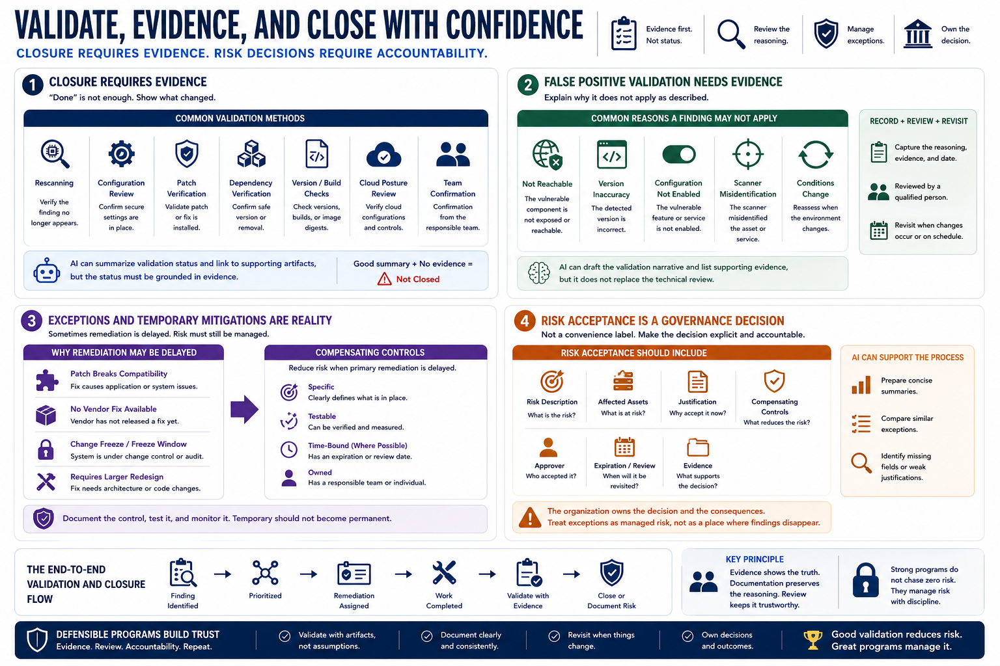

Validation, Exceptions, and Risk Acceptance
Connecting to LMS... Progress: in progress

Narration
A vulnerability should not be closed simply because a ticket moved to a done column. Closure requires evidence. Validation may include rescanning, configuration review, patch verification, dependency verification, version checks, build evidence, cloud posture review, or confirmation from the responsible team. AI can summarize validation status, but the status must be grounded in artifacts that show what changed.
False positive validation also needs evidence. A finding may not apply because the vulnerable component is not reachable, the detected version is inaccurate, a configuration is not enabled, or the scanner misidentified the asset. The reasoning should be recorded, reviewed, and revisited when conditions change. AI can draft the validation narrative, but it should not replace the technical review that supports it.
Exceptions and temporary mitigations are part of real programs. Sometimes remediation is delayed because a patch breaks compatibility, a vendor has not released a fix, a system is under change freeze, or the affected service requires a larger redesign. A compensating control is a measure that reduces risk when primary remediation is delayed or not immediately feasible. It should be specific, testable, time-bound where possible, and owned.
Risk acceptance is a governance decision, not a convenience label. Acceptance should identify the risk, affected assets, justification, compensating controls, approver, expiration or review date, and evidence. AI can help prepare a concise summary, compare exceptions, and identify missing fields. The organization still owns the decision. A defensible program treats exceptions as managed risk, not as a place where findings disappear.